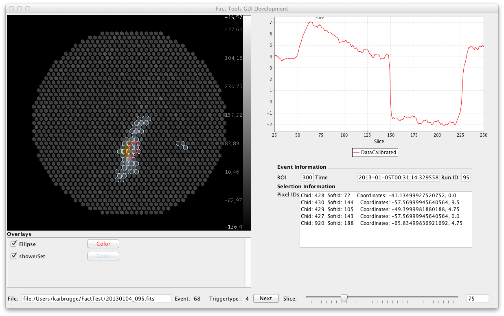

Inspecting Telescope Data
The raw telescope data is hard to inspect manually. For a better visualization, the FACT Tools integrate an event viewer, which allows for easy inspection of single events along with previously computed features. The figure below shows a screenshot of the FACT event viewer.

In order to start an event viewer you only need to add one line into the existing configuration file:
<fact.ShowViewer key="Data"/>